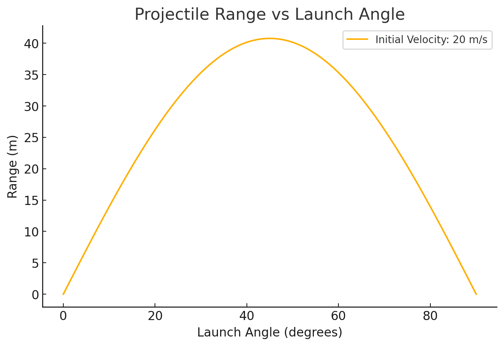
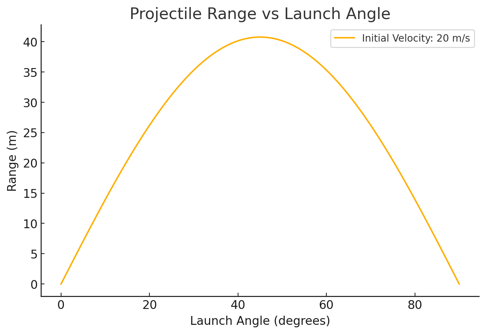

1. Theoretical Foundation
Projectile motion follows Newton's equations of motion. We start with the fundamental kinematic equations:
where:
- \( v_0 \) is the initial velocity,
- \( \theta \) is the launch angle,
- \( g \) is gravitational acceleration (9.81 m/s²),
- \( t \) is time.
The time of flight is derived by setting \( y = 0 \):
The range (horizontal distance) is:
This equation shows that: - The maximum range is achieved at \( \theta = 45^\circ \). - Increasing initial velocity increases the range. - Gravitational acceleration \( g \) inversely affects the range.
2. Analysis of the Range
- Effect of Angle: The range is maximized at \( 45^\circ \). Below or above this angle, the range decreases.
- Effect of Initial Velocity: Increasing \( v_0 \) increases the range quadratically (\( R \propto v_0^2 \)).
- Effect of Gravity: A higher \( g \) (e.g., on Jupiter) reduces the range, while a lower \( g \) (e.g., on the Moon) increases it.
3. Practical Applications
- Sports: Optimizing launch angles in football, golf, and basketball.
- Military & Aerospace: Calculating missile trajectories.
- Engineering: Designing water fountains, rockets, and ballistics.
 

4. Implementation
A Python script was provided to: 1. Simulate projectile motion for different angles. 2. Plot range vs angle for analysis. 3. Visualize trajectories with different parameters.
Limitations & Future Enhancements
- No Air Resistance: In reality, air drag reduces the range.
- Uneven Terrain: The model assumes a flat surface.
- Variable Gravity: Not applicable in different planetary conditions.
To improve the model: - Add air resistance using drag force \( F_d = \frac{1}{2} C_d \rho A v^2 \). - Model wind effects using horizontal forces. - Consider non-uniform gravity in planetary motion.